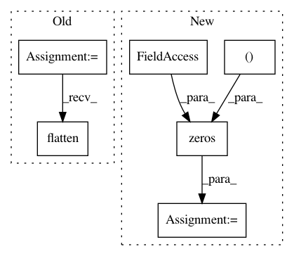

24bf232753b4b34b6d4164d5a647dd17d16348b2,example/convert_resnet/convert.py,,main,#,23
Before Change
parser.add_argument("--encoding")
args = parser.parse_args()
sample_image = PIL.Image.open("../../resources/imagenet/ILSVRC2012_val_00000001.JPEG")
if args.model == "vgg16":
link = chainer.links.model.vision.vgg.VGG16Layers()
prepared_image = chainer.links.model.vision.vgg.prepare(sample_image) // BGR, CHW
out_layer_name = "fc8"
elif args.model == "resnet50":
link = chainer.links.model.vision.resnet.ResNet50Layers()
prepared_image = chainer.links.model.vision.resnet.prepare(sample_image)
out_layer_name = "fc6"
nn_input = chainer.Variable(np.array([prepared_image], dtype=np.float32))
nn_output = link(nn_input, layers=[out_layer_name])[out_layer_name] // "prob" is also possible (uses softmax)
chainer_cg = chainer.computational_graph.build_computational_graph([nn_output])
converter = ChainerGraphConverter()
graph = converter.convert(chainer_cg, [nn_input], [nn_output]) // type: Graph
graph_exec_data = generate_descriptor(args.backend, graph, constant_encoder_name=args.encoding)
os.makedirs(OUTPUT_DIR, exist_ok=True)
graph_exec_data.save(OUTPUT_DIR)
with open(path.join(OUTPUT_DIR, "image_nhwc.json".format()), "w") as f:
image_nhwc = np.transpose(prepared_image, (1, 2, 0))
json.dump(image_nhwc.flatten().tolist(), f)
with open(path.join(OUTPUT_DIR, "fc6.json".format()), "w") as f:
json.dump(nn_output.data.tolist(), f)
After Change
parser.add_argument("--encoding")
args = parser.parse_args()
sample_image = np.zeros((224, 224, 3), dtype=np.uint8)//PIL.Image.open("")
if args.model == "vgg16":
link = chainer.links.model.vision.vgg.VGG16Layers()
prepared_image = chainer.links.model.vision.vgg.prepare(sample_image) // BGR, CHW
In pattern: SUPERPATTERN
Frequency: 3
Non-data size: 6
Instances
Project Name: mil-tokyo/webdnn
Commit Name: 24bf232753b4b34b6d4164d5a647dd17d16348b2
Time: 2017-05-23
Author: hidaka@mi.t.u-tokyo.ac.jp
File Name: example/convert_resnet/convert.py
Class Name:
Method Name: main
Project Name: automl/auto-sklearn
Commit Name: 84dd314904ba2004ab35bbea65c5f2cb684e073c
Time: 2016-02-24
Author: a.domashnev@gmail.com
File Name: autosklearn/estimators.py
Class Name: AutoSklearnClassifier
Method Name: predict
Project Name: pymc-devs/pymc3
Commit Name: d6a2e55cea7640cf6ab1250bbaba66dd79a7ee85
Time: 2017-09-02
Author: maxim.v.kochurov@gmail.com
File Name: pymc3/theanof.py
Class Name: BatchedDiag
Method Name: perform